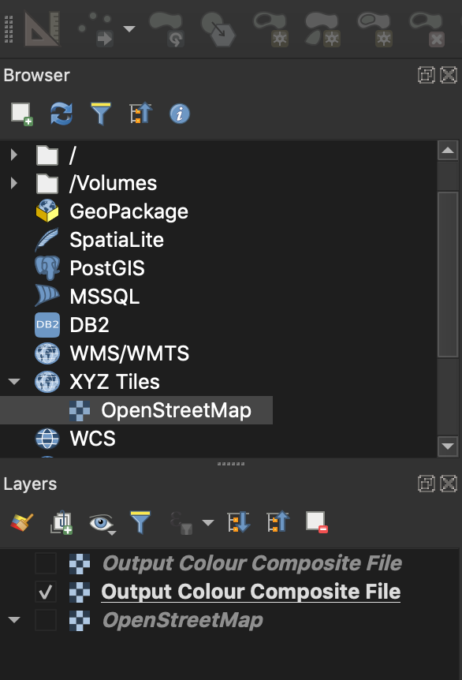
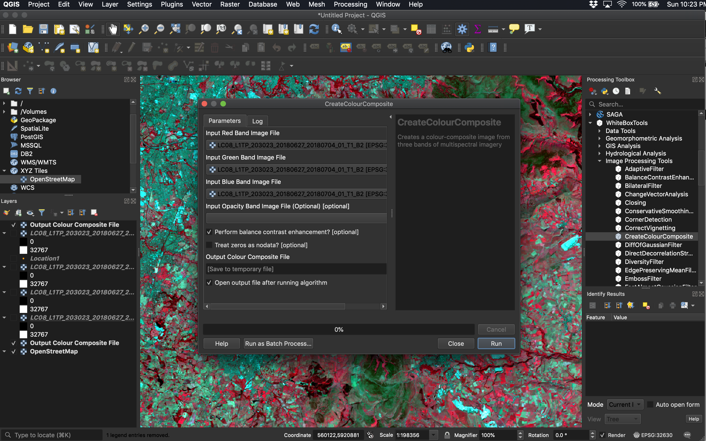

Part 2: Multispectral Imagery Data
In this course, we will be manipulating and analyzing remotely sensed data using QGIS. See the Before you begin section of the introduction for more details.
After you have downloaded the data associated with this lab assignment from the CourseLink page, decompress (unzip) the data into a working directory that you have created to dedicate to this assignment. Open the contents of this folder and examine the files contained within. These data are the multiple bands, in GeoTIFF image format, of a Landsat 8 scene.
In the field of remote sensing, the word band refers to a single image contained within a multispectral or hyperspectral data set. A band corresponds to a single, usually narrow, region of the electromagetic spectrum. Band images are usually greyscale and display information about the relative brightness of the earth's surface at the pixel site across the range of wavelengths associated with the band. For example, in a Landsat 8 band 3 image,a bright white pixel corresponds to a surface material that is reflecting a significant amount of radiation in the 0.525 to 0.600 µm band of wavelengths, which the human eye interprets as green light. A dark coloured pixel, by comparison, would indicate that not much green light is being reflected by that surface material. Some bands within multispectral data sets are associated with regions of the spectrum that fall outside of the visible region (e.g. near-infrared, shortwave infrared, and thermal infrared). Interpreting the relatively brightnesses of pixels within multiple band images can tell you a great deal about the nature of the surface at those sites. This is the basis of multispectral remote sensing data analysis.
Now open the metadata file LC08_L1TP_203023_20180627_20180704_01_T1_MTL.txt using a text editor such as Notepad or TextEdit. This file contains a wealth of information describing the acquisition details and processing that has been carried out on these data. You will likely want to drag the OpenStreetMap layer to the bottom of the map stack so that the imagery is on top.
2.1. What proportion of the land contained within the scene was covered with clouds at the time of acquisition? (1 mark)
2.2. What date was the image acquired on? What are the path and row numbers of the scene? (3 marks)
Open QGIS and add each of the four raster layers (TIFF files) to the map. Now add an OpenStreetMap basemap layer to provide a geographic context for the Landsat images (select OpenStreetMap under XYZ Tiles). While the file names of these four images are quite long, the last number indicates which band of Landsat data the image corresponds with (e.g. LC08_L1TP_203023_20180627_20180704_01_T1_B2.tif is 'band 2'). These four images are bands 2 to 5 of a Landsat scene, that originally contained the complete imagery data set.
2.3. Describe the geographic location of the scene. (1 mark)
2.4. What parts of the spectrum do each of bands 2, 3, 4, and 5 of Landsat 8 data record? (4 marks)
2.5. Which of the bands appears to be overall brightest over the land and which appears to be darkest? Why do you think that that is the case? (4 marks)
2.6. Which of the bands shows the least detail in the turbid water near Liverpool and which exhibits the greatest detail? Why might this be? (4 marks)
2.7. Overlay the vector file 'Location1.shp'. Describe what you think is happening in the image at this location and provide evidence of your conclusions. Why is the phenomenon less apparent in band 5 than the other three bands? (5 marks)
Now, open the CreateColourComposite from the WhiteboxTools toolbox and the Image Analysis folder.
Please note, the first time that you use QGIS on the Lab (Hutt 236) computers, you will need to install the Whitebox for Processing toolbox. This installs WhiteboxTools into QGIS on your user profile and will be saved for later usage. That is, you will only need to do this step one time. For instructions on the installation of the WhiteboxTools plugin for QGIS, please see the WhiteboxTools User Manual. Your GTA will also be walking students through this process during the Lab 1 introductory talk. Please pay close attention at this time. Importantly, you will need to download a copy of WhiteboxTools during this installation process. You should save the WBT folder in your documents folder in your user profile on the lab computers.
Create a natural colour composite image by inputting the red, green, and blue bands into the appropriate inputs on the tool dialog. You may leave the Image Opacity Band blank. Call the output image 'NaturalColour.tif' and be sure to save it into the same working directory containing the rest of the lab data. Run the tool; if the image is not automatically displayed after it has completed, display the image. Also create a near-infrared false-colour composite image by inputting the near-infrared band into the red input, the red band into the green input, and the green band into the blue input. Call the output image 'FalseColour.tif'.

Include both colour-composite images with your assignment write-up. (2 marks)
2.8. Do you think that these imagery would be useful for mapping streets in urban areas? Why or why not? (As always, you must provide justification for your answer) How useful would these data be for mapping land cover/land use, e.g. distinguishing urban areas from surrounding agricultural lands, and forests from water, etc. (6 marks; marks will be assigned based on the quality of answers and demonstrated insight.)
2.9. Which of the two colour composites would be more useful for vegetation mapping applications? That is, in which of the two images is vegetation more apparent (i.e. brightly coloured)? Provide evidence to justify your answer. (2 marks)